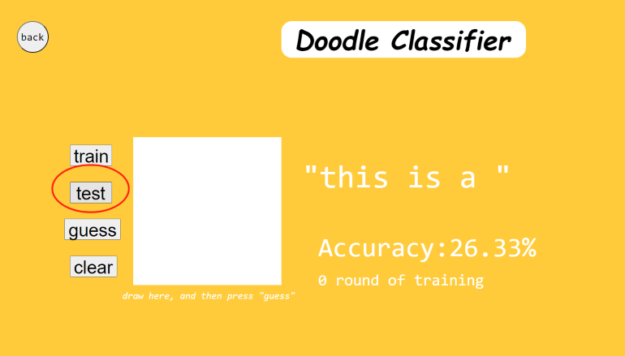

Joshua Li
Open the project folder in the Atom text editor. Remember to have the live-server package installed so that you can simulate the code’s performance in an actual website.
Download all the doodle image data from the google quickdraw data set, and then use Processing to convert it into a binary file, so that I can use it in Javascript. I could just download the .bin directly but I want to examine exactly what image got into the dataset so I did this extra steb.
Code a neural network that classifies doodle input
Open file “Sketch.js”, set the size of data, the file those data reference to , and the rounds of training every time the ‘train’ button is clicked.
Click on “Packages” -> “Live-server” -> “Start server”. A Chrome windows should pop up and wait for the pages to load.
Click on ‘test’, and the accuracy before any training should appear on the page. Record that percentage as control.
Click on the ‘train’ button, it will start training the neural network, recording the accuracy change in each round of training.
After 40 rounds of training, draw on the canvas in my own style 20 times, and see if the AI can guess correctly. This is to determine whether the AI can actually interpret the drawing or just follow a pattern that can be broken by human creativity
Change the size of the dataset and repeat step 4.